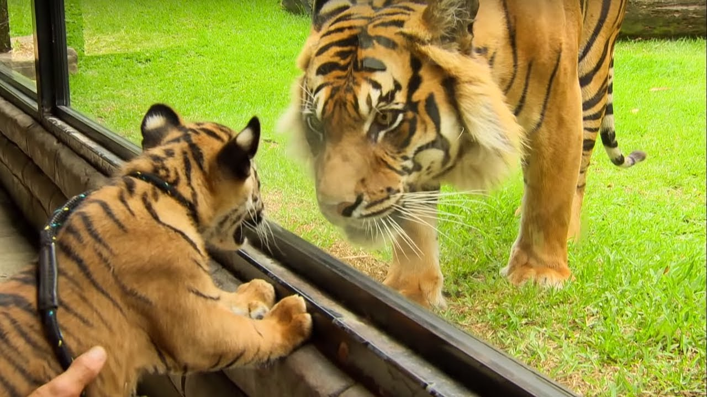
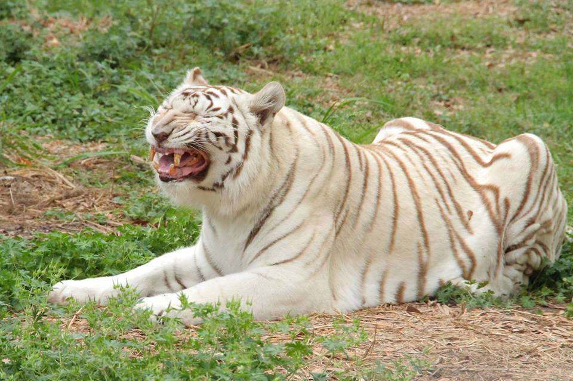

TIGER

In a blow to wildlife, China lifts a ban on the use of tiger and rhino parts
|
In an enormous setback for wildlife conservation, China announced it will allow hospitals to use tiger bone and rhino horn from captive-bred animals for traditional medicine. The decision reverses a decades-old ban that has been instrumental in preventing the extinction of endangered tigers and rhinos.
|
Nepal nearly double its wild tiger population
In an amazing show of progress for wildlife, Nepal is on track to become the first of the world’s countries to double its wild tiger population since 2010.
|

|
Rare footage shows successful tiger breeding
Rare footage of a tiger family offers exciting proof of tigers breeding successfully in the wild. The video shows a female tigress - named Rima - and her 3 cubs growing up in Central Sumatra. Rima then meets Uma, a male Sumatra tiger, and breeds successfully to have four more tiger cubs. Yet, tigers are endangered, facing a high risk of extinction in the wild. Today, there are only around 3,900 wild tigers worldwide. That’s more than a 95% decline from perhaps 100,000 just over a century ago.
|

|

|
Doubling in Bhutan"s Royal Manas National Park
In less than a decade, Bhutan’s Royal Manas National Park has achieved a big win for tiger conservation. From only 10 tigers in 2010, its population has now grown to 22. With a global population of as few as 3,890 wild tigers, every population increase matters. And it marks a significant step towards achieving the goal of doubling the world’s wild tigers.
|
4 Unseen benefits of protecting tigers and their habitatFrom the world’s largest mangrove forests in the Sundarbans to temperate forests in the snowy mountains of Bhutan, protecting tigers and their natural homes helps provide benefits for thousands of other animals and millions of people.
|

|
Click hear